Sid Wilson
DJ
⓪
 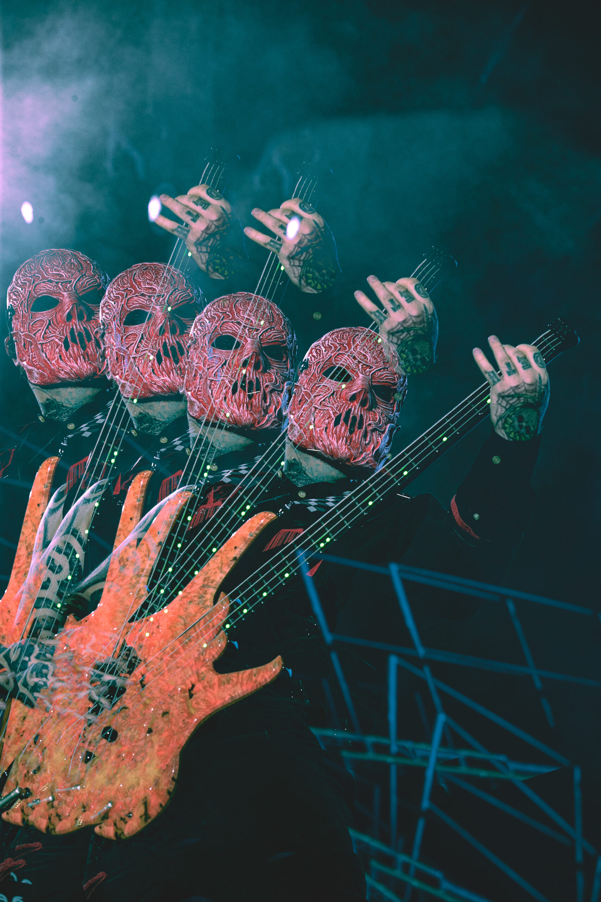
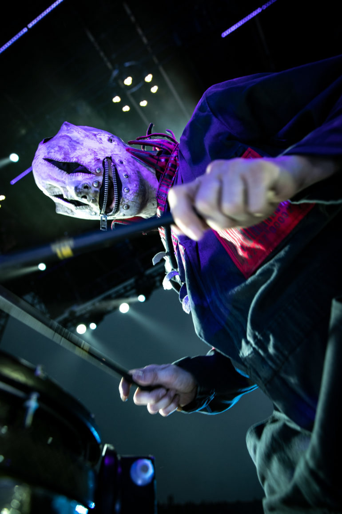
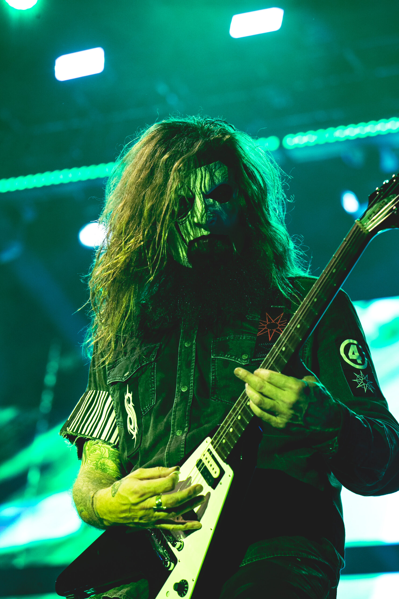
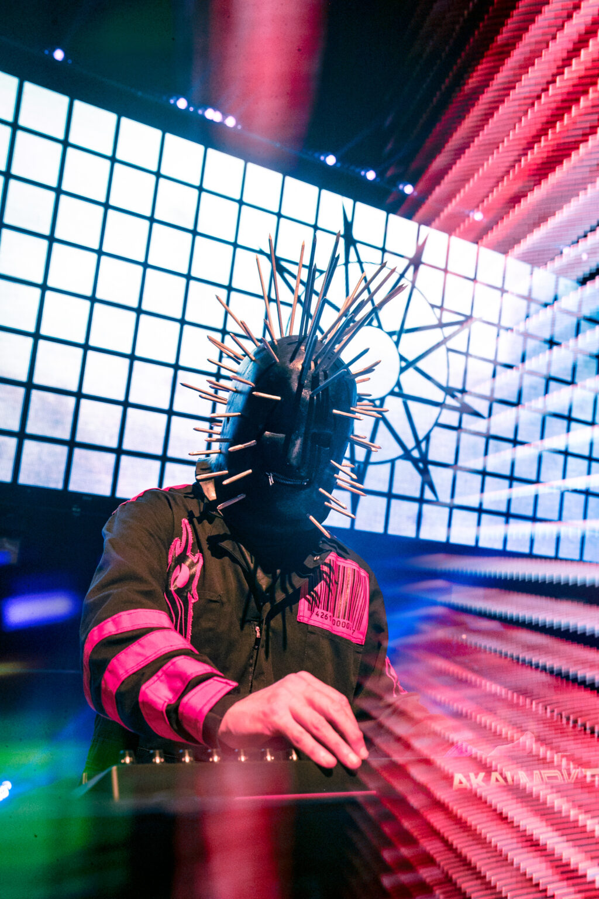
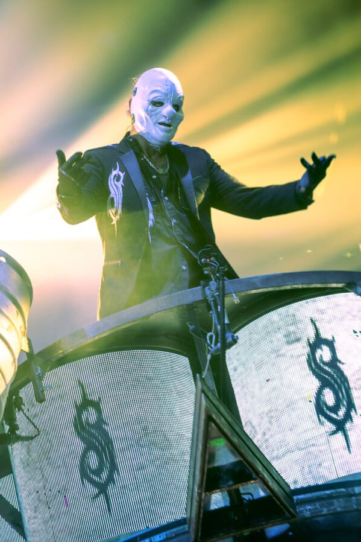
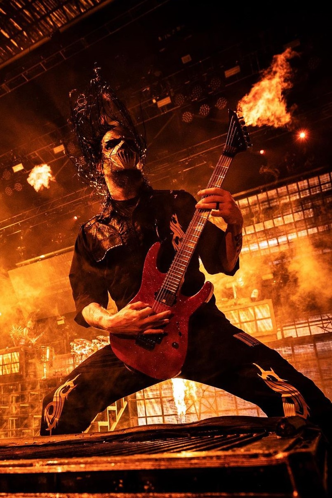
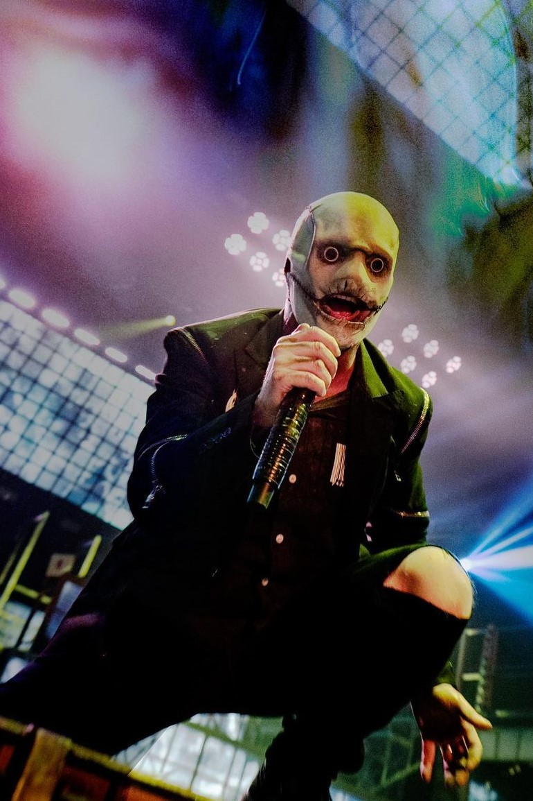
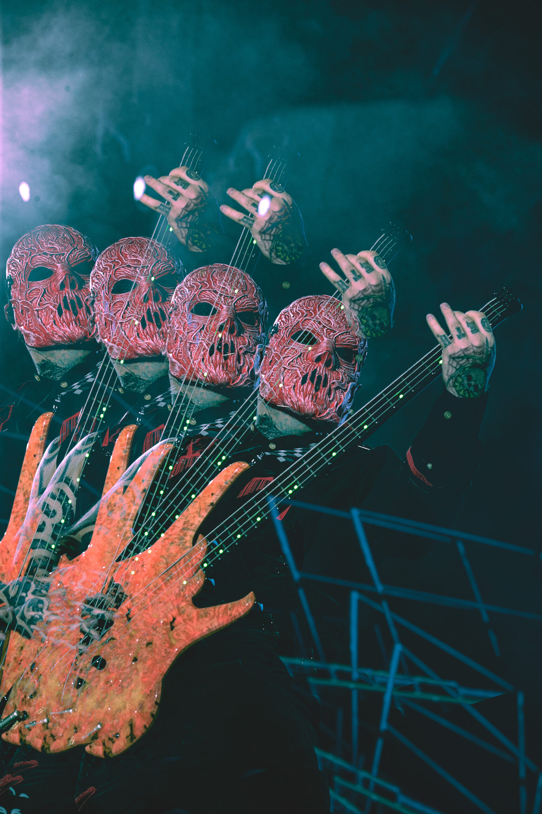
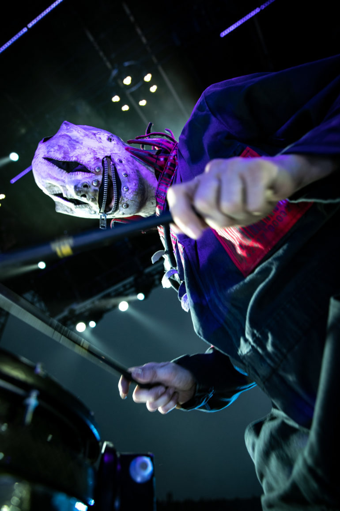
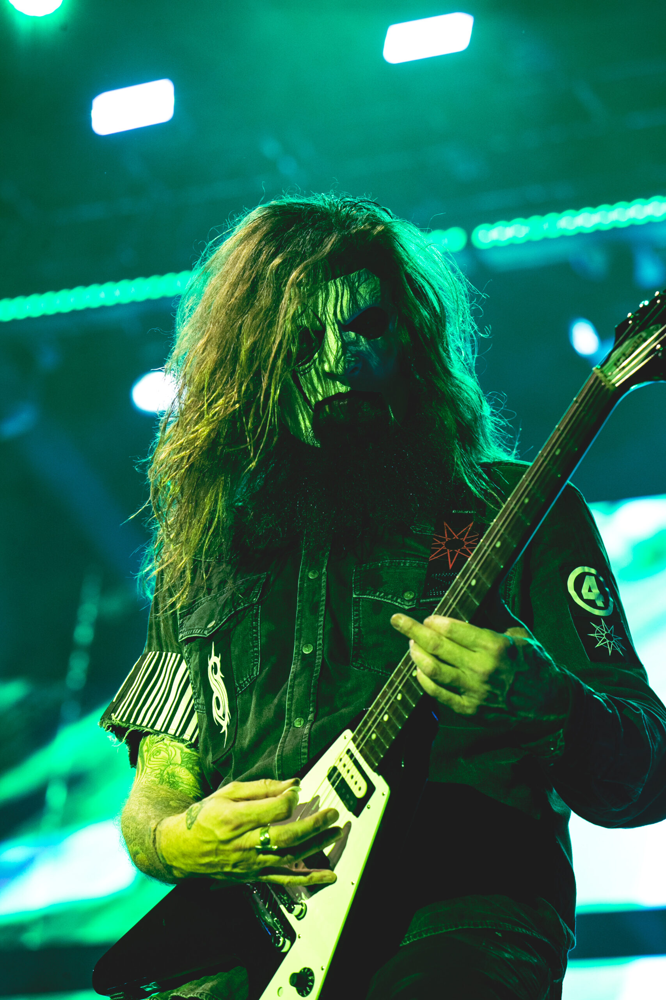
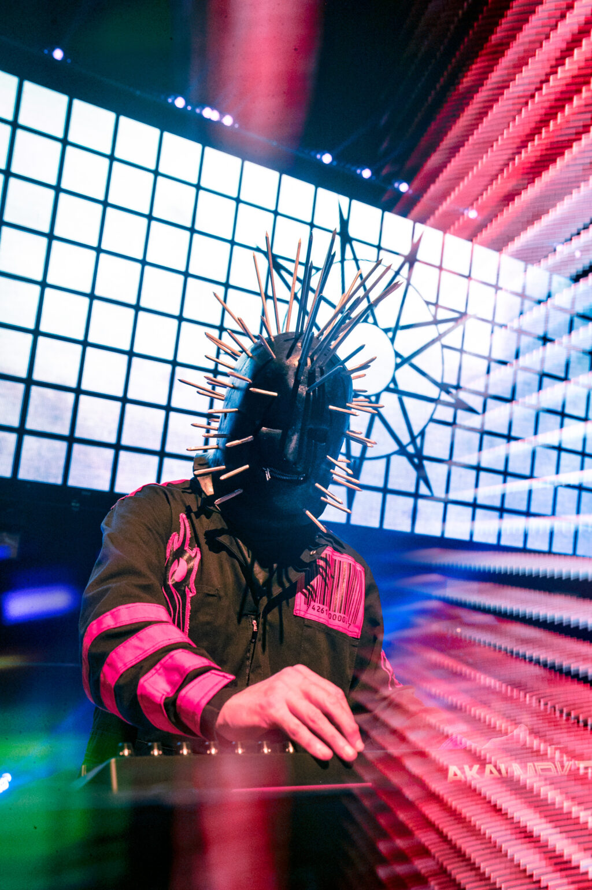
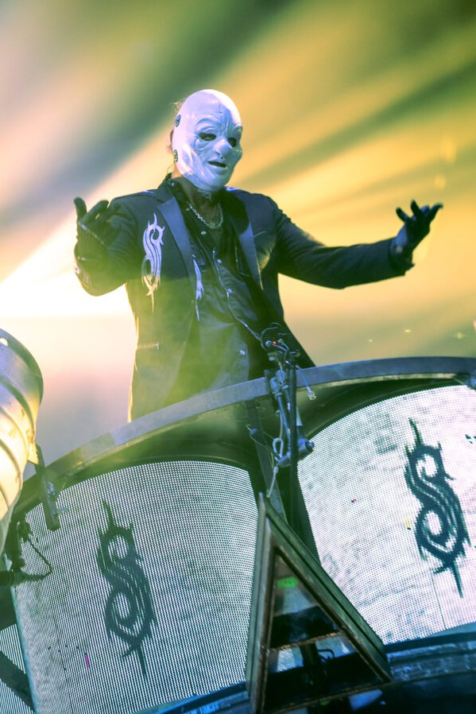
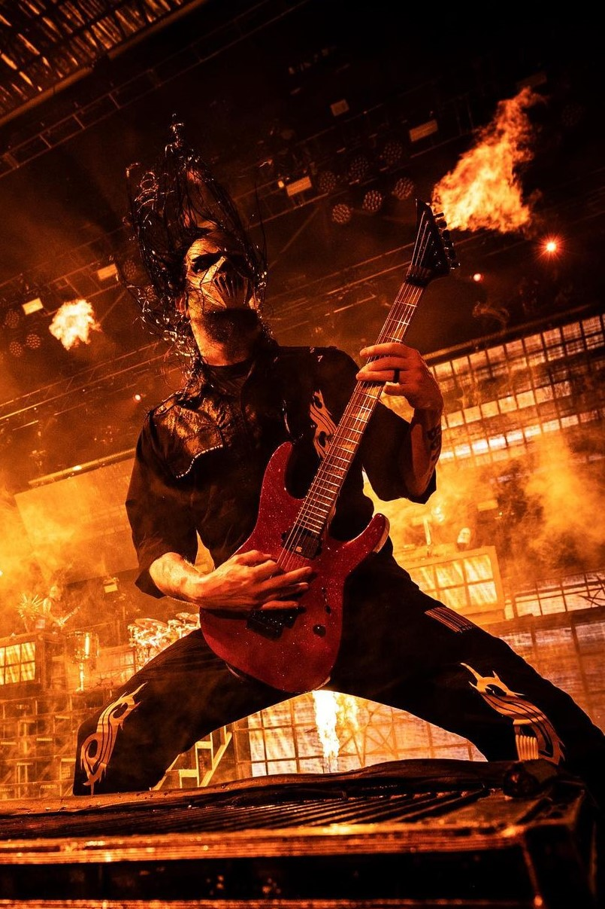
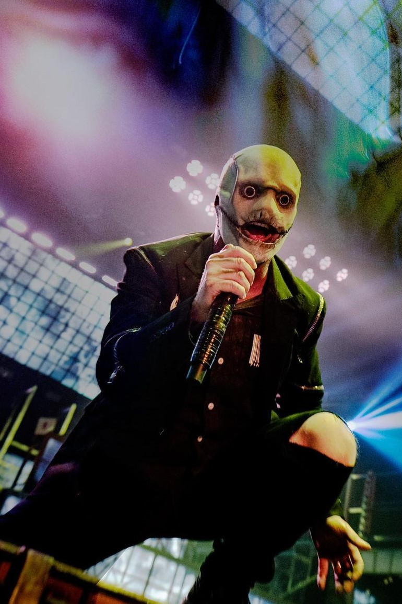
Slipknot es una banda de metal alternativo y nu metal originaria de Des Moines, Iowa, formada en 1995. La banda se destaca por su sonido agresivo, sus letras introspectivas y su imagen distintiva, caracterizada por máscaras y trajes elaborados. Su música a menudo explora temas como la alienación, la ira, la introspección y el dolor emocional.
La formación original de Slipknot incluía a nueve miembros: Shawn "Clown" Crahan, Joey Jordison, Paul Gray, Chris Fehn, James Root, Craig Jones, Sid Wilson, Mick Thomson y Corey Taylor. A lo largo de los años, la alineación ha experimentado algunos cambios, con la partida y llegada de miembros, pero el núcleo creativo y emocional ha permanecido sólido.
Su álbum debut homónimo, "Slipknot", lanzado en 1999, introdujo al mundo su sonido distintivo y su enfoque visual único. Canciones como "Wait and Bleed" y "Spit It Out" se convirtieron en himnos del metal moderno, mientras que su energético y caótico espectáculo en vivo cautivó a los fanáticos de la música en todo el mundo.
El segundo álbum de la banda, "Iowa" (2001), profundizó en la oscuridad y la intensidad de su música. Temas como "Disasterpiece" y "The Heretic Anthem" mostraron una faceta aún más agresiva y visceral de la banda. A pesar de su intensidad, el álbum recibió elogios de la crítica y solidificó la posición de Slipknot como una fuerza importante en el mundo del metal.
Con el paso de los años, Slipknot ha seguido evolucionando y explorando nuevos sonidos y temáticas. Álbumes como "Vol. 3: (The Subliminal Verses)" (2004) y "All Hope Is Gone" (2008) ampliaron los horizontes musicales de la banda, incorporando elementos de rock alternativo y metal progresivo.
Trágicamente, en 2010, Paul Gray, el bajista y uno de los miembros fundadores de la banda, falleció debido a una sobredosis de drogas. Su muerte dejó un vacío en el corazón de la banda y en la comunidad de fans, pero Slipknot perseveró, lanzando su quinto álbum de estudio, "5: The Gray Chapter" en 2014, como tributo a su amigo y compañero.
DJ
⓪
Batería
①
Bajo
②
Percusión/
Coros
③
texto
Guitarra Líder
④
Teclados
⑤
Percusión
⑥
Guitarra Rítmica
⑦
Vocalista
⑧